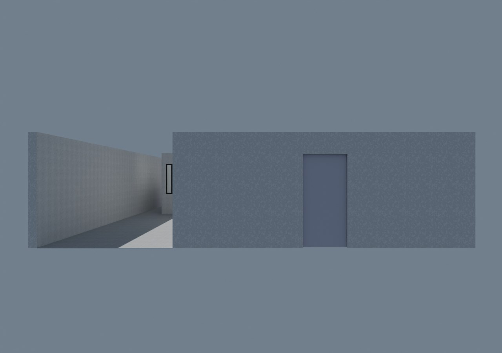
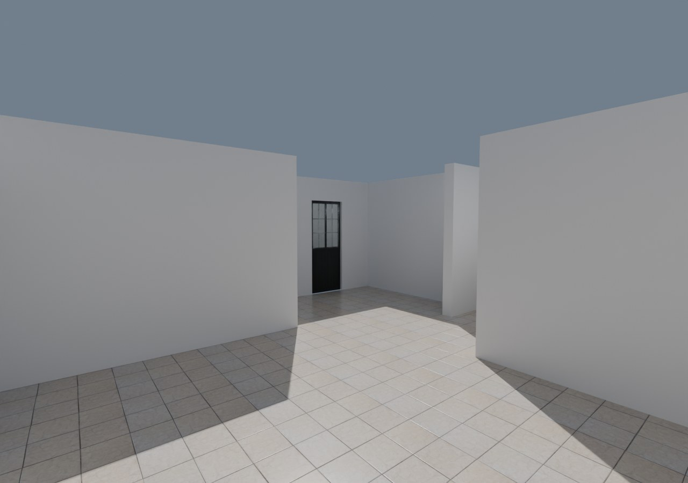
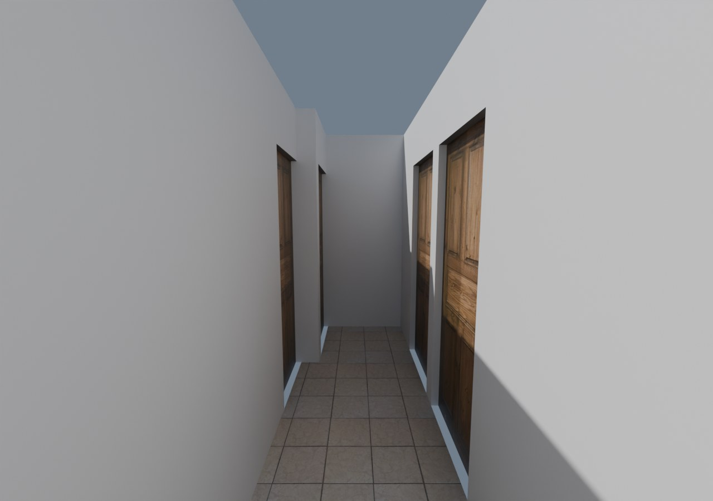
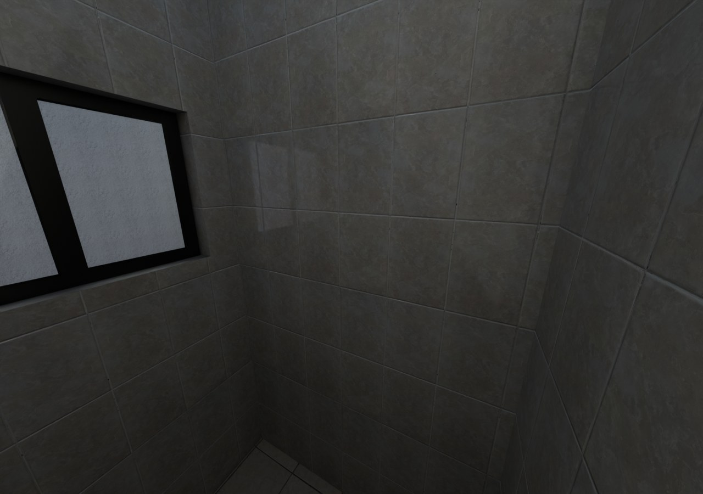
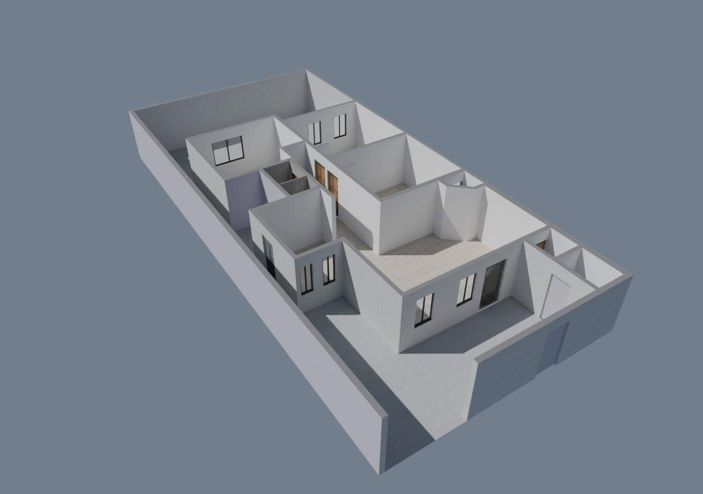

Gemelo digital · planta baja
Casa Jonhy
El plano de la casa convertido en un modelo BIM (IFC) con sus acabados reales, para recorrerla en 3D y probar remodelaciones antes de hacerlas.
Ver la casa
Recorrido 3D
Camina por la casa en primera persona, abre puertas y closets. En «Versión» se elige la casa actual o una propuesta.
Propuesta: cocina en U
La remodelación de la cocina y la lavandería, directo en el recorrido.
Propuesta: fachada moderna
Aplanado blanco, duela de madera en la entrada, zócalo y herrería de lamas negras.
Visor de la planta
Muros, vanos y cuartos tal como salen del plano, para girar y medir.
Renders




